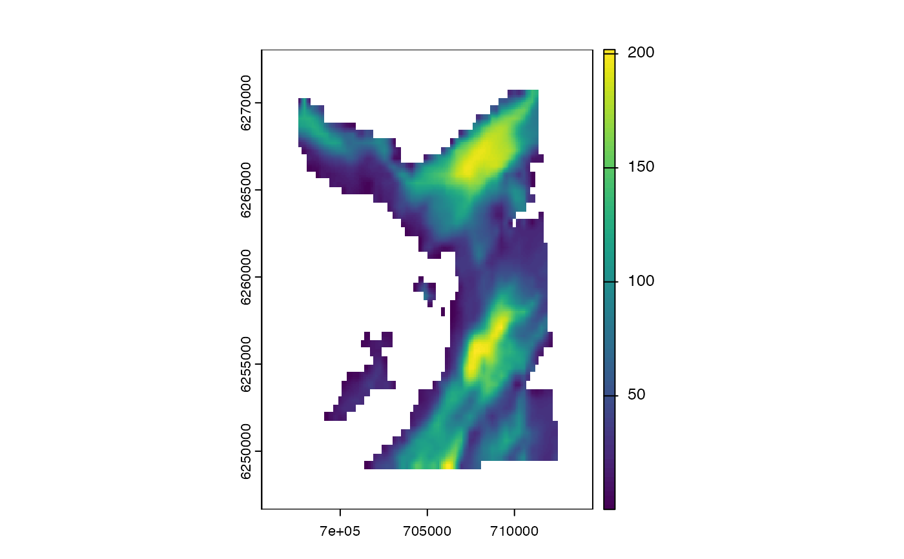

ModelMove is Abstract Type in Patter.jl that groups movement model sub-types, of which instances can be created via an R move_*() function.
move_xy(
dbn_length = "truncated(Gamma(1, 250.0), upper = 750.0)",
dbn_angle = "Uniform(-pi, pi)"
)
move_xyzd(
dbn_length = "truncated(Gamma(1.0, 750.0), upper = 750.0)",
dbn_angle_delta = "Normal(0, 0.5)",
dbn_z_delta = "Normal(0, 3.5)"
)Character strings that define movement model components:
dbn_length---the distribution of step lengths;
dbn_angle---the distribution of turning angles;
dbn_angle_delta---the distribution of changes in turning angles;
dbn_z_delta---the distribution of changes in depth;
move_*() functions return a character string that defines a ModelMove instance for evaluation in Julia. If the map (env) does not exist in Julia, an error is thrown.
Movement model sub-types are Julia structures that hold the components of movement models. From an R-user perspective, you can think of a ModelMove sub-type as an S4-class-like object, with slots for the components of a movement model. With a movement model instance, we can simulate movements and evaluate the density of movements from one state (location) to another.
The following movement models are built in to Patter.jl:
ModelMoveXY
ModelMoveXYZD
See Patter.jl or JuliaCall::julia_help("ModelMove") for the fields of the built-in sub-types. Briefly, all sub-types include:
A map field, that defines the region(s) within which movements are permitted. In R, it is convenient to represent map as a SpatRaster, where NAs define inhospitable habitats (e.g., land). This should made available to Julia ModelMove constructors as env via set_map();
Additional model-specific components (such as fields for the distribution of step lengths and turning angles in the case of two-dimensional random walks);
In patter, movement models are required:
To simulate movement paths, via sim_path_walk();
To run the particle filter, via pf_filter();
To run the particle smoother, via pf_smoother_two_filter();
In R functions, the movement-model instance is specified via the .model_move argument. This argument expects a character string defining a ModelMove instance that can be evaluated in Julia (that is, a ModelMove constructor). move_*() functions are convenience functions for the specification of these constructors for the built-in sub-types. All ModelMove instances contain a map field that defines the region(s) within which movements are permitted. To use a move_*() function, the map should be available in Julia as env (see set_map()). The additional components of the movement model are specified via move_*() function arguments as character strings of Julia code. Currently implemented move_*() functions are:
move_xy(), which specifies a movement model of subtype ModelMoveXY in terms of the distributions of step lengths and turning angles;
move_xyzd(), which specifies a movement model of subtype ModelMoveXYZD in terms of the distributions of step lengths, changes in turning angles and changes in depth;
See here for the translations of distributions in R (e.g., *norm()) into Julia (e.g., Normal()).
In Julia, ModelMove instances are used to simulate states via Patter.simulate_step(). In the particle smoother, the density of movement from one state to another is evaluated by Patter.logpdf_step(). These are generic functions. Different methods are dispatched according to the input model. For the built-in ModelMove sub-types, corresponding methods for these routines are also built-in. For custom ModelMove sub-types, the methods need to be provided.
To use custom ModelMove sub-types, see Examples.
The routines in patter for the simulation of individual movements, observations and statistical modelling are built upon three Abstract Types defined in Julia:
if (julia_run()) {
library(data.table)
library(JuliaCall)
library(truncdist)
#### Connect to Julia
julia_connect()
set_seed()
#### Define the `map`
# `map` is the region within which movements are permitted
# In `R`, we represent this as a `SpatRaster`
# Here, we have a bathymetry `SpatRaster` for the west coast of Scotland:
# * NaNs define regions into which movement is not permitted
# * (i.e., on land, in the case of aquatic animals)
map <- dat_gebco()
terra::plot(map)
# Using `set_map()` makes the map available as a object called 'env' in `Julia`
# > This is required as a component of all movement models
set_map(map)
#### Example (1): Use `move_xy()` with default options
# `move_*()` functions simply return a character string of Julia code
# (Downstream functions can evaluate this code, as shown below)
move_xy()
#### Example (2): Customise `move_xy()`
# Use a truncated normal distribution for step lengths:
hist(rtrunc(1e5L, "norm", a = 0, b = 750, mean = 250, sd = 50))
move_xy(dbn_length = "truncated(Normal(250, 50), lower = 0.0, upper = 750.0)")
# Use an exponential distribution for step lengths
hist(rtrunc(1e5L, "exp", b = 750, rate = 0.001))
move_xy(dbn_length = "truncated(Exponential(0.01), upper = 750.0)")
# Use a biased random walk
move_xy(dbn_angle = "VonMises(0, 1)")
# Get help on a distribution in Julia:
julia_help("Exponential")
#### Example (3): Customise `move_xyzd()`
# Use default options
move_xyzd()
# Customise model components
move_xyzd(dbn_length = "truncated(Normal(250, 50), lower = 0.0, upper = 750.0)",
dbn_angle_delta = "Normal(0, 0.25)",
dbn_z_delta = "Normal(0, 2.5)")
#### Example (4): Visualise different movement models
# Define a timeline for the simulation
timeline <- seq(as.POSIXct("2016-01-01", tz = "UTC"),
length.out = 1000L, by = "2 mins")
# Define an initial location
x <- 708212.6
y <- 6251684
origin <- data.table(map_value = terra::extract(map, cbind(x, y))[1, 1],
x = x, y = y)
# Collect essential arguments for `sim_path_walk()`
args <- list(.map = map,
.xinit = origin,
.timeline = timeline,
.state = "StateXY",
.n_path = 2L, .one_page = FALSE)
# Compare different movement models via `sim_path_walk()`
pp <- par(mfrow = c(2, 2))
args$.model_move <- move_xy()
do.call(sim_path_walk, args)
args$.model_move <- move_xy(dbn_angle = "VonMises(0.1, 0.1)")
do.call(sim_path_walk, args)
par(pp)
#### Example (5): Use movement models in the particle filter
# See `?pf_filter()`
#### Example (6): Use custom movement model types
# Patter contains multiple built-in `State` and `ModelMove` subtypes that you can use
# ... (with custom parameters) simulate movements and for particle filtering.
# See the help file for `?State` to use a new subtype.
}
#> Loading required package: stats4
#> Loading required package: evd
#> `patter::julia_connect()` called @ 2024-05-27 14:05:25...
#> ... Running `Julia` setup via `JuliaCall::julia_setup()`...
#> Julia version 1.10.3 at location /Users/lavended/.julia/juliaup/julia-1.10.3+0.aarch64.apple.darwin14/bin will be used.
#> Loading setup script for JuliaCall...
#> Finish loading setup script for JuliaCall.
#> ... Validating Julia installation...
#> ... Setting up Julia project...
#> ... Handling dependencies...
#> ... Julia set up with 8 threads.
#> `patter::julia_connect()` call ended @ 2024-05-27 14:05:44 (duration: ~19 sec(s)).

#> ```
#> Exponential(θ)
#> ```
#>
#> The *Exponential distribution* with scale parameter `θ` has probability density function
#>
#> $$
#> f(x; \theta) = \frac{1}{\theta} e^{-\frac{x}{\theta}}, \quad x > 0
#> $$
#>
#> ```julia
#> Exponential() # Exponential distribution with unit scale, i.e. Exponential(1)
#> Exponential(θ) # Exponential distribution with scale θ
#>
#> params(d) # Get the parameters, i.e. (θ,)
#> scale(d) # Get the scale parameter, i.e. θ
#> rate(d) # Get the rate parameter, i.e. 1 / θ
#> ```
#>
#> External links
#>
#> * [Exponential distribution on Wikipedia](http://en.wikipedia.org/wiki/Exponential_distribution)